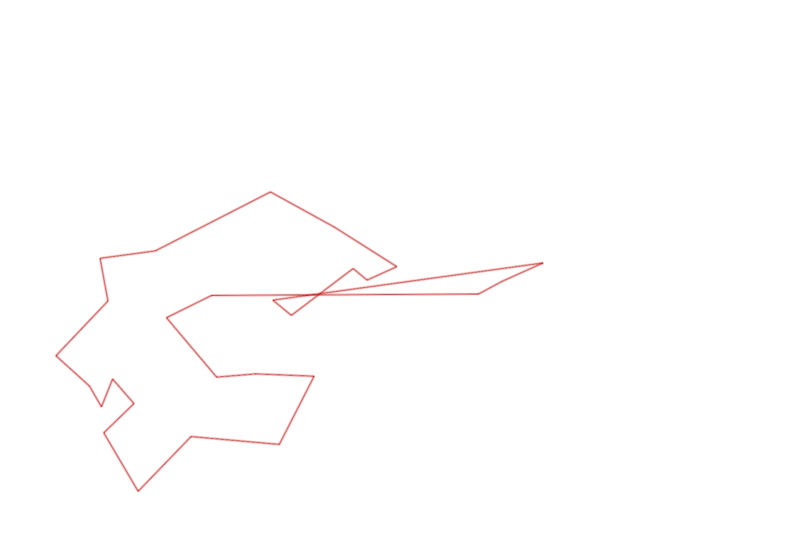
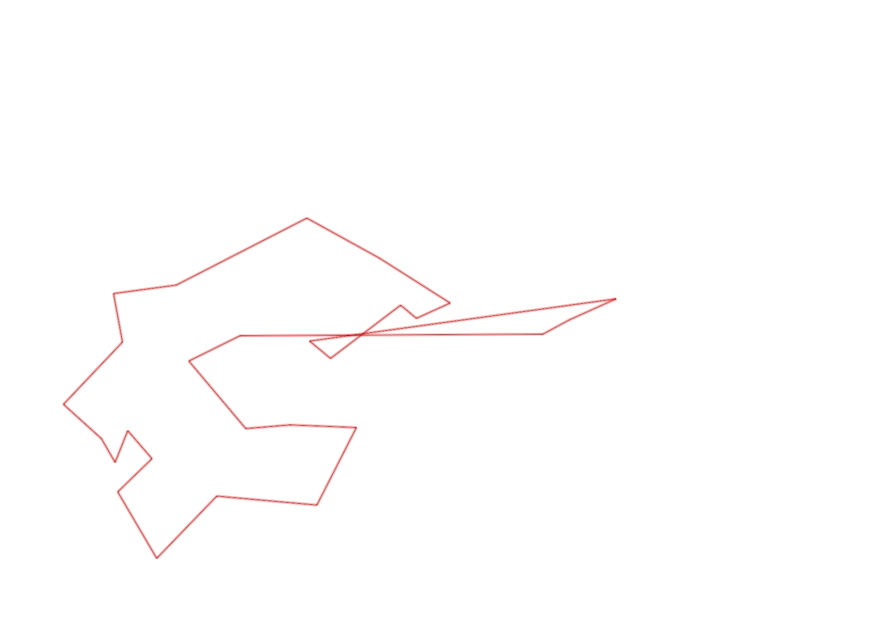

| Control |
Points |
Time Punched |
Distance |
Your Time |
Pace |
Place |
Fastest Time |
Median Time |
% Behind Fastest |
| 127 |
20 |
|
0.06 |
0:00:01 |
00:16 |
1 / 30 |
0:00:01 |
0:00:32 |
0% |
| 92 |
90 |
|
0.21 |
0:02:21 |
11:11 |
2 / 6 |
0:02:15 |
0:04:11 |
4% |
| 35 |
30 |
|
0.05 |
0:02:16 |
45:20 |
9 / 12 |
0:01:31 |
0:01:55 |
49% |
| 47 |
40 |
|
0.09 |
0:00:54 |
10:00 |
1 / 11 |
0:00:54 |
0:01:31 |
0% |
| 57 |
50 |
|
0.2 |
0:04:28 |
22:20 |
4 / 7 |
0:03:52 |
0:04:28 |
15% |
| 107 |
100 |
|
0.2 |
0:02:04 |
10:20 |
4 / 21 |
0:00:00 |
0:02:52 |
-% |
| 63 |
60 |
|
0.35 |
0:02:24 |
06:51 |
4 / 18 |
0:01:59 |
0:02:42 |
21% |
| 32 |
30 |
|
0.15 |
0:00:43 |
04:46 |
4 / 27 |
0:00:36 |
0:00:56 |
19% |
| 44 |
40 |
|
0.12 |
0:01:09 |
09:35 |
7 / 29 |
0:00:52 |
0:01:49 |
32% |
| 53 |
50 |
|
0.2 |
0:02:34 |
12:50 |
16 / 26 |
0:01:31 |
0:02:15 |
69% |
| 69 |
60 |
|
0.12 |
0:01:10 |
09:43 |
10 / 29 |
0:00:45 |
0:01:18 |
55% |
| 71 |
70 |
|
0.06 |
0:01:06 |
18:20 |
9 / 25 |
0:00:48 |
0:01:13 |
37% |
| 54 |
50 |
|
0.08 |
0:00:34 |
07:05 |
5 / 33 |
0:00:27 |
0:00:45 |
25% |
| 41 |
40 |
|
0.09 |
0:01:01 |
11:17 |
1 / 13 |
0:01:01 |
0:01:43 |
0% |
| 40 |
40 |
|
0.11 |
0:01:07 |
10:09 |
17 / 24 |
0:00:45 |
0:01:00 |
48% |
| 77 |
70 |
|
0.18 |
0:02:33 |
14:10 |
16 / 21 |
0:01:35 |
0:02:21 |
61% |
| 59 |
50 |
|
0.21 |
0:02:00 |
09:31 |
1 / 18 |
0:02:00 |
0:02:47 |
0% |
| 61 |
60 |
|
0.24 |
0:03:03 |
12:42 |
5 / 19 |
0:02:14 |
0:03:16 |
36% |
| 42 |
40 |
|
0.21 |
0:02:46 |
13:10 |
5 / 14 |
0:02:19 |
0:03:34 |
19% |
| 38 |
30 |
|
0.16 |
0:03:53 |
24:16 |
1 / 1 |
0:03:53 |
0:03:53 |
0% |
| 60 |
60 |
|
0.11 |
0:00:49 |
07:25 |
6 / 19 |
0:00:42 |
0:00:57 |
16% |
| 130 |
30 |
|
0.21 |
0:02:06 |
10:00 |
3 / 5 |
0:01:22 |
0:02:06 |
53% |
| 126 |
20 |
|
0.14 |
0:01:21 |
09:38 |
4 / 12 |
0:01:09 |
0:01:26 |
17% |
| 48 |
40 |
|
0.72 |
0:07:19 |
10:09 |
1 / 1 |
0:07:19 |
0:07:19 |
0% |
| 64 |
60 |
|
0.07 |
0:00:49 |
11:39 |
4 / 14 |
0:00:38 |
0:01:05 |
28% |
| 49 |
40 |
|
0.12 |
0:01:34 |
13:03 |
7 / 12 |
0:00:55 |
0:01:28 |
70% |
| Finish |
0 |
|
0.73 |
0:04:39 |
06:22 |
1 / 2 |
0:04:39 |
0:09:17 |
0% |
Total Distance Covered: 5.19km
Points Scored: 1270
Late Penalty: 0
Final Score: 1270
Total Time: 0hours 56minutes 44seconds
Efficiency: 244.7 points/km
 
